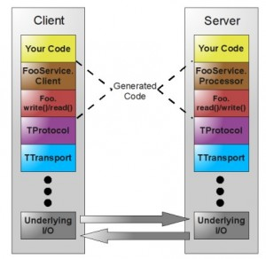

Thrift 架构设计
先看一下 Thrift 官网的架构图：

图中 TProtocol 表示协议层，即定义数据的传输格式。
- TBinaryProtocol：二进制格式；
- TCompactProtocol：压缩格式；
- TJSONProtocol：JSON格式；
- TSimpleJSONProtocol：提供JSON只写协议, 生成的文件很容易通过脚本语言解析（基本不用）；
- TDebugProtocol：使用易懂的可读的文本格式，以便于debug
图中 TTransport 表示传输层，即定义数据的传输方式，可以为TCP/IP传输，内存共享或者文件共享等
- TSocket：阻塞式socket，使用最少，效率最低；
- TFramedTransport：以frame为单位进行传输，非阻塞式服务中使用；
- TFileTransport：以文件形式进行传输；
- TMemoryTransport：将内存用于I/O，java实现时内部实际使用了简单的ByteArrayOutputStream；
- TZlibTransport：使用zlib进行压缩，与其他传输方式联合使用，当前无java实现；
Thrift 支持的服务模型
- TSimpleServer：简单的单线程服务模型，常用于测试；
- TThreadPoolServer：多线程服务模型，使用标准的阻塞式IO；
- TNonblockingServer：多线程服务模型，使用非阻塞式IO（需使用TFramedTransport数据传输方式）；
- THsHaServer：THsHaServer 是 TNonblockingServer 的扩展，THsHaServer 引入了线程池去处理， 其模型把读写任务放到线程池去处理，Half-sync/Half-async的处理模式，Half-async 是在处理 IO 事件(accept/read/write io)上，Half-sync 用于 handler 对 rpc 的同步处理。
综上，常用的组合是：
- 传输格式是：TCompactProtocol
- 传输方式是：TFramedTransport
- 服务模型是：THsHaServer